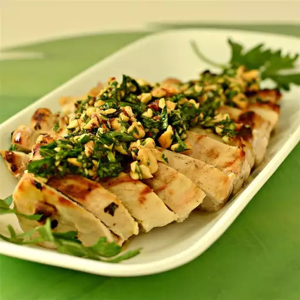

Salsa

How to make Salsa
using the term salsa verde the way it's used around northern California. It's a very generic term for any fresh green sauce, usually starring some type of herb, but also can be made with spinach, arugula, etc.
Ingredients
- 2/3 cup roasted,salted almonds,finely chopped
- 1 bunch flar-leaf parsley,finely chopped
- 1 clove garlic,minced
- 1 cup olive oil
steps
- Combine chopped almonds and parsley on a cutting board ;chop together again until very finely chopped.
- Transfer almond mixture to a bowl and add garlic.Stir olive oil into almond mixture until a thick sauce forms.